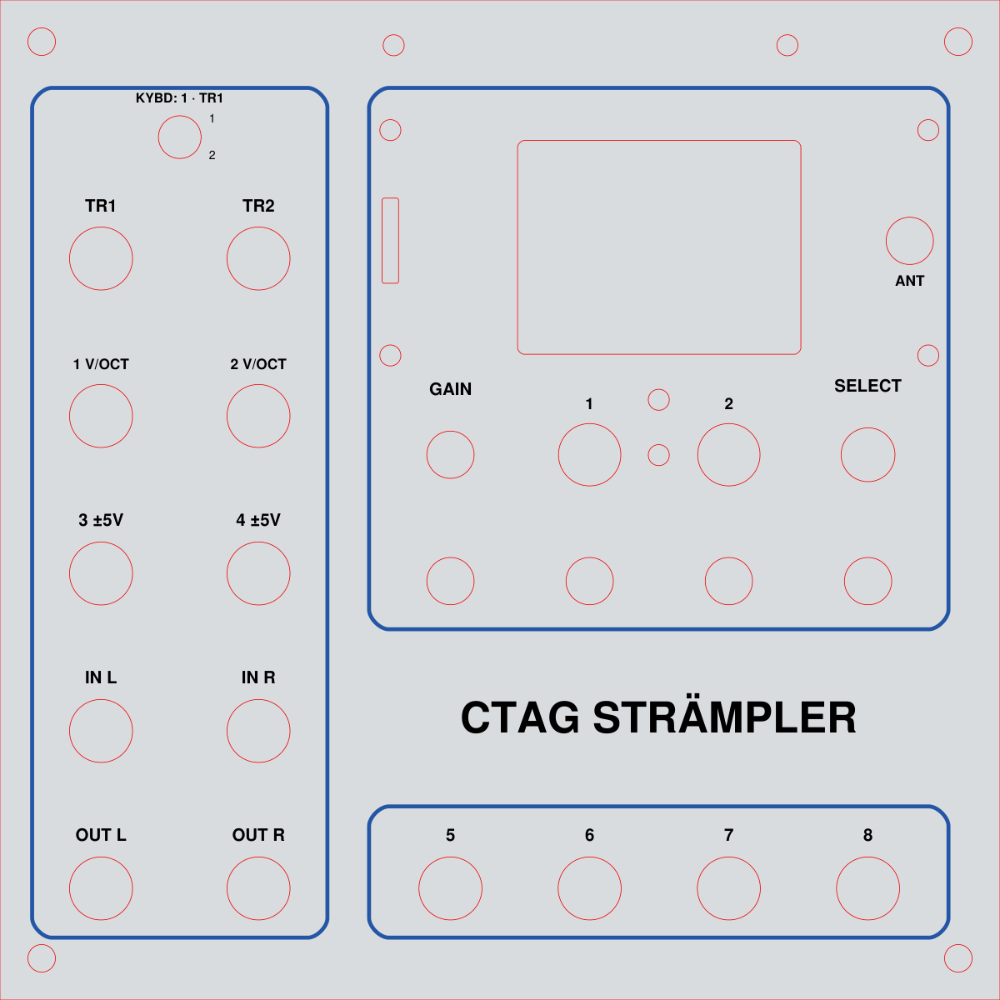

The Remote panel card for the 6" × 6" E-mu panel: one web column, or two with the 2x
button. Every control sits at its gen_emu_panel.py coordinate (the screen is drawn 20% over scale); the overlay slider
lays the generator's own render over the card to check it. Static data, animated: nothing here talks to
a unit. Knobs and the CV 1–4 sockets drag; TR caps pulse; click the screen to zoom.

one column (502 px), or two with the 2x button (1016 = 502 + 12 + 502) · flag: CONFIG.JSN settings.panel = "emu" · reference: emu_panel.png